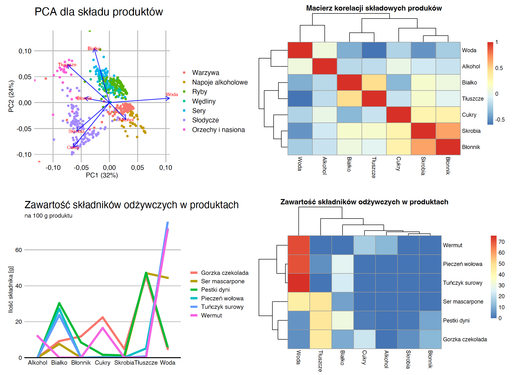

2 Sprawdzone przepisy
W tym rozdziale porozmawiamy o najbardziej sprawdzonych i najczęściej stosowanych sposobach przedstawiania danych statystycznych. Paradoksem analizy danych jest to, że każde dane są inne, ale do większości danych zadajemy bardzo podobne pytania. W swoim zawodowym życiu brałem udział w analizie setek, jeżeli nie tysięcy zbiorów danych. Ale zdecydowana większość z tych analiz składała się z podobnych pytań o to, co w danych najważniejsze: Jakie wartości i jak często przyjmuje określona zmienna – to pytanie o jej rozkład. Jak różnią się podgrupy obserwacji – to pytanie o różnice w rozkładach. Czy pomiędzy dwiema zmiennymi występuje korelacja – to pytanie o zależności. Czy w całych danych widoczna jest zależność pomiędzy wieloma zmiennymi – to pytanie o strukturę. Na te pytania statystycy wypracowali wzorce odpowiedzi, które pozwalają na czytelne podsumowanie dużych ilości informacji. Zobaczmy więc, jakie wykresy są sprawdzonym sposobem prezentacji rozkładu jednej zmiennej, rozkładów zmiennych w podgrupach, korelacji i identyfikacji struktury.
Poniższe przykłady są oparte na niedawno opublikowanej holenderskiej bazie danych o składzie żywności NEVO, którą opracował instytut Rijksinstituut voor Volksgezondheid en Milieu (RIVM) – holenderski Narodowy Instytut Zdrowia Publicznego i Środowiska (Środowiska Holandii (RIVM) 2021). Ta baza zawiera dane dotyczące składu ponad 2200 produktów spożywczych i ponad 130 składników (białko, węglowodany, tłuszcze i kwasy tłuszczowe, witaminy i minerały).

Do tych danych wrócimy w sekcji Zakoduj to sam, gdzie pokażemy, jak odtworzyć poniżej zaprezentowane wykresy. Drogi Czytelniku, jeżeli sam chciałbyś poeksperymentować z tymi danymi, to przeskocz do ostatniego rozdziału, pobierz odpowiednie dane i eksperymentuj z przedstawianiem informacji o produktach spożywczych.
Dostępne dane są bardzo ciekawe, szczegółowo opisują 2200 produktów spożywczych. Produkty są podzielone na 27 grup (wędliny, nabiał, warzywa itp.), ale z uwagi na objętość tej książki poniżej przyglądamy się tylko 7 z tych grup oraz 7 głównym składnikom tych produktów: ilości białka, błonnika, cukrów, skrobi, tłuszczów, wody i alkoholu. Będziemy poznawać te dane, jednocześnie poznając sprawdzone typy wykresów statystycznych.
%Eksplorując dane najczęściej w pierwszym kroku chcemy się przyjrzeć poszczególnym zmiennym, jedna po drugiej. Zmienna po zmiennej chcemy dowiedzieć się jakie wartości są przyjmowane często a jakie rzadko. Później sprawdzamy czy te rozkłady różnią się w podgrupach lub czy jedna zmienna koreluje z innymi.
2.1 Zmienna ilościowa
Zmienna ilościowa to zmienna opisująca ilość pewnej wielkości, np. wzrost, wiek, ciężar, gęstość itp. Przykładowo w przedstawionych danych mamy dla każdego produktu informację o wartości energetycznej na 100 g tego produktu. W danych są produkty o niskiej wartości energetycznej i takie o bardzo wysokiej. Ale jakich wartości możemy się tam spodziewać? W odpowiedzi na to pytanie pomoże nam histogram.
Histogram został po raz pierwszy wprowadzony przez Karla Pearsona pod koniec XIX wieku. Zakres możliwych wartości zmiennej ilościowej dzieli się na przedziały o równej długości, a następnie dla każdego przedziału przedstawia się, ile obserwacji do niego należy. Liczba przedziałów często zależy od ilości danych, im więcej danych, tym więcej możemy definiować przedziałów. W przykładzie poniżej mamy 30 przedziałów, każdy o szerokości 30 jednostek.
Dla małej liczby danych i dużej liczby przedziałów słupki mogą mieć dużą zmienność, co utrudni odczytanie zależności. W takiej sytuacji można zastosować wygładzenie np. z użyciem tzw. jądrowego estymatora gęstości.
Na rysunku Figure 2.2 przedstawiono oba podejścia do wizualizacji rozkładu zmiennej ilościowej. Widać z nich, że w danych mamy sporą liczbę produktów o bardzo niskiej wartości energetycznej, większość produktów ma wartość energetyczną do 500 kcal, ale jest też kilka takich, których wartość energetyczna przekracza 700 kcal.
2.2 Zmienna ilościowa w podgrupach
Jeżeli już wszystko wiemy o zachowaniu jednej zmiennej, to najczęściej kolejnym krokiem jest zrozumienie, jak podobne lub różne jest zachowanie tej zmiennej w podgrupach obserwacji.
Możemy oczywiście narysować obok siebie rozkład określonej zmiennej osobno dla każdej grupy obserwacji. Taka technika pokazywania danych w postaci siatki wykresów nazywa się small multiples. Pierwszy panel na rysunku Figure 2.3 przedstawia rozkład wartości energetycznej w podgrupach z użyciem wspomnianej techniki.
W przypadku gęstości często stosowanym rozwiązaniem jest rysowanie podgrup różnymi kolorami na jednym panelu. Dzięki temu łatwo zauważyć, czy rozkłady dla dwóch grup pokrywają się, czy różnią. Przykład takiego rozwiązania pokazany jest na drugim panelu poniższego wykresu.
Jeszcze bardziej kompaktowym sposobem prezentacji rozkładu jest tzw. wykres pudełko-wąsy, ang. boxplot. Ponad 60 lat temu John Tukey zaproponował, by zredukować informacje o rozkładzie do pięciu liczb (tzw. piątki Tukeya), czyli minimalnej, maksymalnej, środkowej (mediana) i ćwiartkowych (kwartyle). Te pięć liczb dzieli zbiór obserwacji na cztery równoliczne części. Można je przedstawić za pomocą wykresu pudełkowego, w którym pudełko ograniczone jest przez kwartyle, znajdująca się w jego środku kreska odpowiada medianie, zaś wąsy sięgają minimalnej i maksymalnej wartości. Często przyjmuje się również, że wąsy nie mogą być dłuższe niż półtorej szerokości pudełka i wszystkie obserwacje wykraczające poza ten zakres oznacza się kropkami - tak też jest na Rysunku Figure 2.3. Taki wykres pozwala na czytelne przedstawienie rozkładu dla wielu podgrup.
Wadą wykresów pudełkowych jest trudność w odwzorowaniu rozkładów wielomodalnych, ponieważ gubi się informacje o modalności. Rozwiązaniem są wykresy skrzypcowe, na których gęstość rozmieszczenia obserwacji prezentowana jest w sposób przypominający skrzypce, stąd nazwa tego wykresu. Łatwiej zauważyć na nim ewentualną wielomodalność, trudniej zauważyć, gdzie jest mediana i kwartyle.
Na rysunku Figure 2.3 widzimy, że większość warzyw ma bardzo niską wartość energetyczną – z wyjątkiem ewentualnie kilku, które osiągają powyżej 200 kcal na 100 g (okazuje się, że są to suszone wodorosty lub pomidory). Zupełnie odwrotnie wygląda sytuacja w przypadku orzechów i nasion, z których większość ma wartość kaloryczną powyżej 400 kcal na 100 g.
2.3 Zmienna jakościowa
Zmienna jakościowa to cecha, która nie jest ilościowa, jej wartości nie są pomiarami, ale najczęściej odnoszą się do różnych możliwych wyników. Przykładami takich zmiennych są: kolor oczu, narodowość, zawód itp. W opisywanych danych zmienną jakościową jest typ składnika odżywczego.
Aby zobaczyć, jakie wartości przyjmuje ten wskaźnik oraz jak często je przyjmuje, najwygodniej jest użyć wykresu słupkowego – patrz pierwsze panele rysunku Figure 2.4. Można słupki rysować pionowo, ale często lepszym rozwiązaniem jest rysowanie ich poziomo, by mieć więcej miejsca na nazwy kategorii na osiach. Wykres słupkowy świetnie sprawdza się w precyzyjnym przedstawianiu liczebności.
Jeżeli naszym celem jest pokazanie względnych częstości poziomów zmiennej jakościowej, to ciekawą alternatywą mogą być wykresy kołowe lub obszarowe, zaprezentowane na trzecim i czwartym panelu rysunku Figure 2.4. Precyzja odczytywania względnych wartości jest znacznie mniejsza, ale łatwiej ocenić, ile kategorii potrzeba połączyć, by w sumie uzyskać 25% lub 50% całości. Wykresy kołowe mają też dosyć dużą grupę przeciwników (słusznie) twierdzących, że każde dane można przedstawić czytelniej na wykresie innego rodzaju.
2.4 Zmienna jakościowa w podgrupach
A jak pokazać zależność pomiędzy zmiennymi jakościowymi w podgrupach? Można do tego wykorzystać wykres słupkowy lub pączkowy (ang. donut plot, ale można tę nazwę tłumaczyć jako wykres pierścieniowy). Przykłady obu wykresów są przedstawione na rysunku Figure 2.5.
Jeżeli słupki ustawimy na sobiei je unormujemy, to łatwiej będzie dostrzec względne proporcje wewnątrz grup. Jeżeli ustawimy je obok siebie, to łatwiej będzie porównywać bezwzględne wartości.
Użycie wykresu mozaikowego pozwala na przedstawienie zarówno rozkładów brzegowych, jak i warunkowych, ale czytanie takich wykresów wymaga pewnej wprawy i sporo osób ma z nimi problemy, więc to raczej rozwiązanie dla zaawansowanych użytkowników. Użycie wykresu pączkowego dziedziczy wszystkie wady wykresów kołowych (np. trudności w odczytywaniu kątów).
Poniższe wykresy pokazują te same dane – udział siedmiu składowych w sześciu losowo wybranych produktach. Który z tych wykresów najczytelniej przedstawia informacje o tych składnikach? Zauważ, drogi Czytelniku, że dla trzech ostatnich produktów (pestki dyni, mascarpone, czekolada) udział tłuszczów jest podobny i wynosi około 45%. Dla dwóch produktów mamy podobną ilość błonnika (pestki dyni, czekolada). Pozostawiam czytelnikowi ocenę, który z tych wykresów pozwala na szybkie zauważenie tych informacji.
2.5 Para zmiennych ilościowych
Najczęstszym sposobem pokazywania zależności pomiędzy dwiema zmiennymi ilościowymi są wykresy kropkowe. Na jednej osi prezentowana jest jedna zmienna, na drugiej druga, czasem można dorysować trend, by zależność była bardziej widoczna. Przykład takiego wykresu jest przedstawiony na rysunku Figure 2.6.
Wykresy kropkowe mają bardzo wiele odmian. Jedną z częstych modyfikacji są transformacje osi. Dla zmiennych skośnych, szczególnie tych skupionych wokół zera, użytecznymi transformacjami są pierwiastkowanie lub logarytmowanie osi. Na lewym panelu poniższego wykresu zastosowano transformację pierwiastkową dla osi, dzięki czemu punkty są bardziej równomiernie rozmieszczone na całym wykresie, a nie tylko skupione w okolicy zera.
Inną popularną modyfikacją wykresów kropkowych są wykresy Blanda-Altmana, nazywane też wykresami różnic Tukeya (pierwsza z tych nazw jest często używana w biochemii i medycynie). Na jednej osi rysowana jest średnia z dwóch zmiennych, na drugiej osi prezentowana jest różnica pomiędzy zmiennymi. Takie zestawienie zmiennych pozwala ocenić ich zgodność. Przykład takiego wykresu jest przedstawiony na prawym panelu rysunku Figure 2.6. Zbiorczo widać, że jednak tłuszcze mają większy udział w tych produktach niż białka, wyjątkiem są produkty rybne.
2.6 Wiele zmiennych
Gdy już poznamy zależności dla pary zmiennych, kolejnym krokiem jest eksploracja większej grupy zmiennych.
Istnieje wiele technik statystycznych pozwalających na lepsze zrozumienie wspólnych zależności pomiędzy zmiennymi. W przypadku danych ilościowych często wykorzystywaną techniką jest analiza składowych głównych – PCA. Pozwala ona na przedstawienie zarówno obserwacji, jak i zmiennych w dwuwymiarowej przestrzeni, tak by możliwie zachować informacje o tym, które zmienne są ze sobą skorelowane, a jednocześnie, które obserwacje mają wysokie wartości w poszczególnych zmiennych. Analizując wynik analizy PCA przedstawiony na rysunku Figure 2.7, można podejrzewać, że zawartość skrobi i cukrów są ze sobą skorelowane dodatnio, a woda jest dodatnio skorelowana z ilością alkoholu i ujemnie z innymi zmiennymi, szczególnie z błonnikiem. Pionowa oś rozróżnia produkty bogate w białko i tłuszcze od produktów bogatych w cukry i skrobie.

Częstym podsumowaniem dla zbioru zmiennych są wykresy korelacji, np. prezentowane za pomocą map ciepła, jak na powyższym rysunku. Pozwalają one zauważyć, które zmienne są najsilniej skorelowane i ile mamy takich skorelowanych skupisk.
Jeżeli chcemy przedstawić indywidualne obserwacje, uwzględniając dla nich wiele zmiennych, to przydatne mogą być wykresy typu mapa ciepła lub wykresy liniowe. Oba te typy wykresów są przedstawione na ostatnich dwóch panelach rysunku Figure 2.7.
2.7 Zadania
Przyjrzyjmy się kilku portalom informacyjnym, gdzie ważna jest czytelna i konsekwentna komunikacja danych.
- Miejscem, gdzie błyskawicznie konsumowane są olbrzymie ilości danych są giełdy. Przyjrzyj się notowaniom cen akcji, walut, indeksów, np. na stronie https://gpw.pl/ lub https://bankier.pl/. Jakiego typu dane są tu przedstawiane? Jakie mechanizmy zastosowano, by ułatwić szybką analizę setek indeksów jednocześnie? Jak poradzono sobie, by pokazać jednocześnie wolumen sprzedaży i cenę?
- PISA to cykliczne badanie umiejętności szkolnych wśród 15-latków z dziesiątek krajów na świecie. Co trzy lata analizowane są umiejętności setek tysięcy uczniów, a następnie są one zestawiane z niezliczonymi wskaźnikami. Raporty PISA są najeżone danymi oraz wykresami. Zapoznaj się z jedną z publikacji dotyczących tych danych, dostępnych na stronie https://www.oecd.org/pisa/. Jakie dwa rodzaje wykresów są w niej najczęściej stosowane. Jakie mechanizmy wykorzystano, aby ułatwić czytanie danych na tych wykresach?
- Prawdopodobnie największą, a z pewnością najbardziej zróżnicowaną bazą danych w Europie jest baza Eurostatu – urzędu statystycznego gromadzącego najróżniejsze dane o krajach Wspólnoty i nie tylko. Zapoznaj się z wybraną publikacją ze strony https://ec.europa.eu/eurostat i zastanów się, jaki rodzaj wykresów jest tam najczęściej wykorzystywany. Dlaczego? Jakie mechanizmy zastosowano, aby ułatwić czytanie danych na tych wykresach?
Jeżeli chciałbyś dowiedzieć się więcej o klasycznych wykresach do prezentacji różnego rodzaju danych i relacji, to może zainteresować Cię esej Od kuchni z książki Odkrywać! Ujawniać! Objaśniać!.